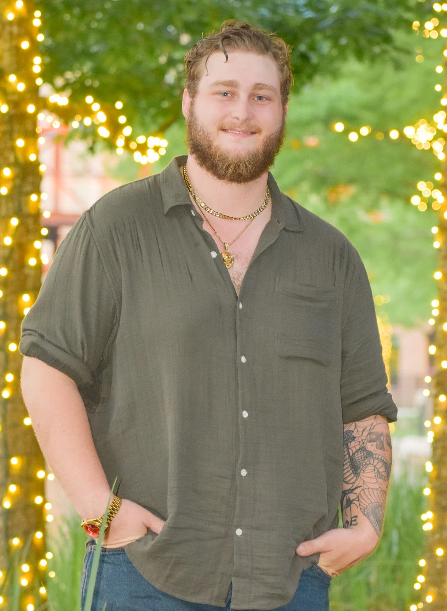

The Short Version
We first met in 7th grade, sharing a few laughs across the cafeteria at lunch.
Life had taken us in different directions, but in December of our senior year we started talking again. It didn't take long to realize there was something special between us.
He asked me to prom — and the very next day, he asked me to be his girlfriend. The rest, as they say, is history.
Not long after graduation, we moved in together and began building our life side by side.
We created a home filled with love, laughter, and more pets than most people expect. When we're not caring for our crew, you'll find us out in nature, rolling dice for D&D, or just enjoying time together.
He set up a camera "for a picture of us," hurried back over — and got down on one knee. I said yes to being his future wife.
One of the sweetest parts: we're both taking a new shared last name — one that holds a special place in our hearts and perfectly reflects the family we've built together.
And now, a wedding. We can't wait to celebrate with all the people we love.
In Our Own Words
Makayla
We first met in 7th grade, sharing a few laughs across the cafeteria. As the years went on, life took us in different directions and we never really got the chance to know each other. Everything changed in December of our senior year, when we started talking again — and it didn't take long to realize there was something special between us. He asked me to prom, and the very next day he asked me to be his girlfriend.
The proposal was one of the easiest surprises I've ever fallen for. Unknown to me, he'd already spoken to my Mom and Dad seeking their approval — a resounding yes! After I suggested a spontaneous trip, he planned a visit to Balancing Rock at Garden of the Gods. He set up a camera, saying he wanted a picture of us together. As he hurried back over, I laughed and asked why his heart was beating so hard. Instead of answering, he got down on one knee and asked me to be his future wife.
From two kids sharing laughs across a cafeteria to building a home, a family, and now a wedding — I'm so thankful for every step that brought us here.
Micah

I first met Makayla in 7th grade. She always was trying to take my spot at lunch, and what I didn't know at the time was, she liked me even back then. Skip forward a couple of years and we found ourselves in the same Money Matters class. I found myself unable to stop looking at her, talking to her, and just being around her. I realized I had a major crush on her, so I gathered up my courage and asked her to prom. She said yes! (Seems to be a pattern developing.) Thank God she did, because I was afraid she was gonna say no.
Two days after prom, I asked her to be my girlfriend. I had every opportunity to mess this up — I was nervous as could be with my heart thumping in my throat, and even managed to call her a B*#^%. I know I am one lucky guy, because she still said yes! (See? Pattern.) 😂😂😂 She really should have given me a slap.
A couple of months later, we graduated high school and moved in together. We have worked every job together — from Goodsons, to the Adriatic Cafe, and now we work as inspectors. We have had countless pets over our years together so far: 30 different tarantulas, 5 bearded dragons, 3 cats — it has definitely become a zoo in our home.
I realized there is not a single other person I would want to spend my life with besides her, so I had to once again gather my courage. I spoke with her dad, I spoke with her mom and got their blessings, and planned a trip so I could surprise her when I asked her to marry me. Seems that "Yes" pattern is still holding — along with my luck — because here we are.
The Whole Family
Our home has always had room for one more. Meet the crew:
Always in our hearts — Bruno, Medusa & Jason
Through the Years
(These are placeholders. Send me your real photos — childhood pictures, prom, the proposal, the pets — and I'll place them along the timeline and gallery.)